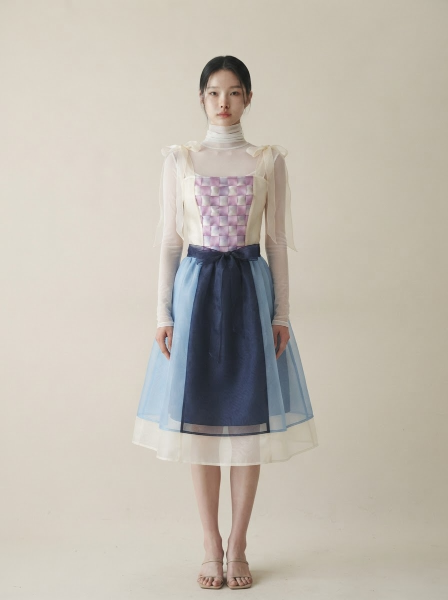
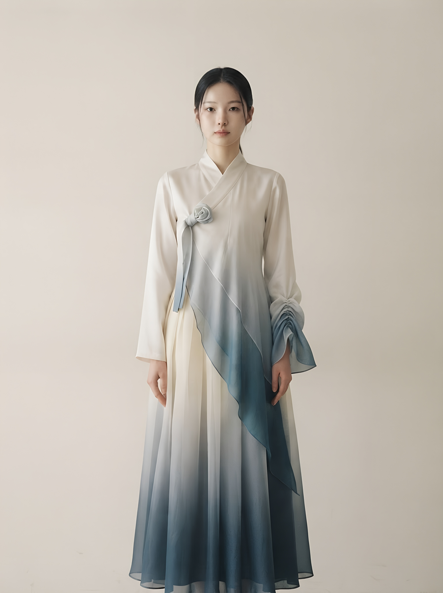
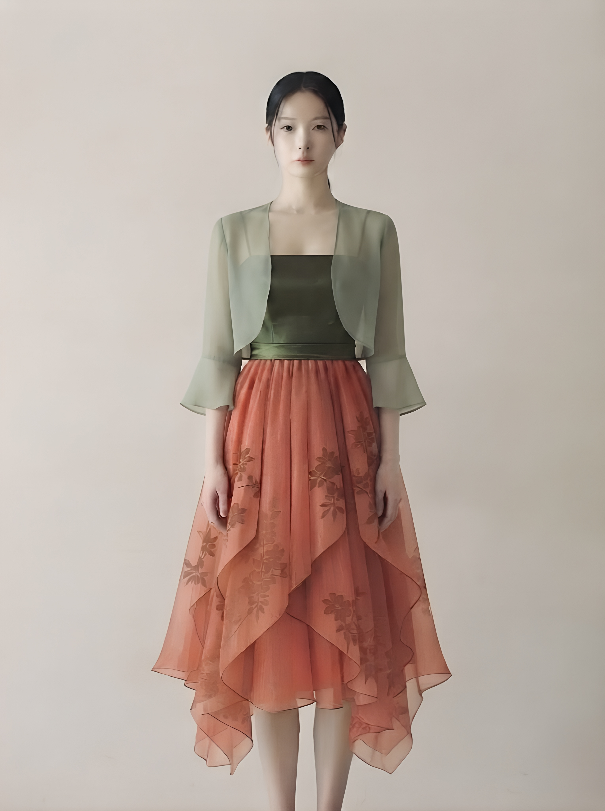
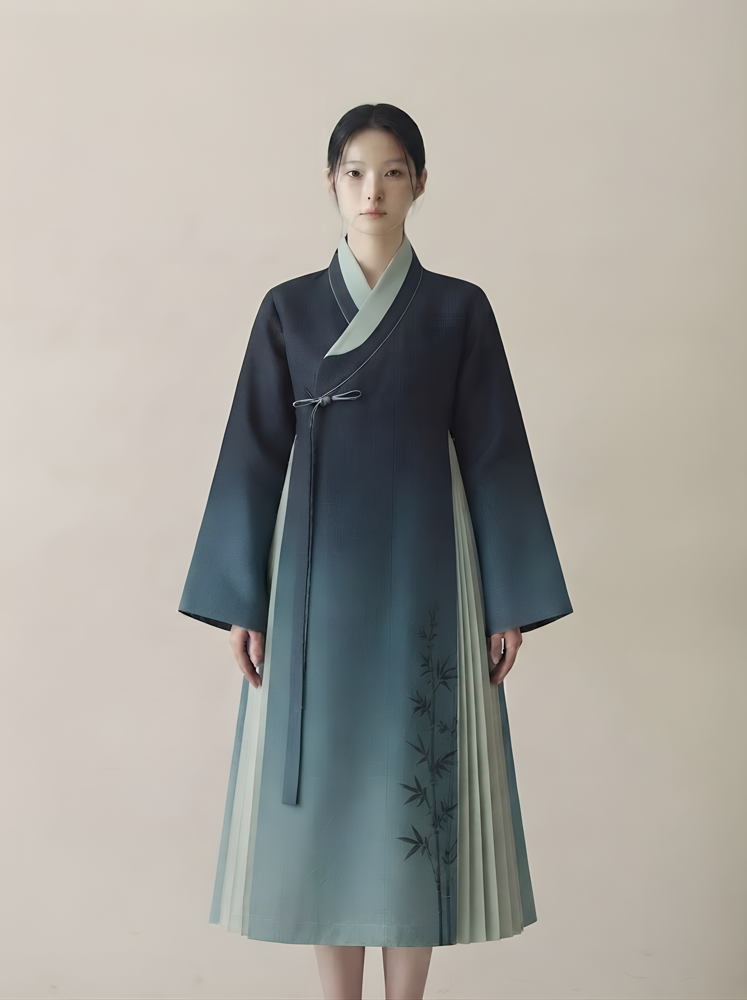

01경계를 넘는
BEAUTY BEYOND BOUNDARIES
경계를 넘는
아름다움
조각을 잇고, 낯선 표면을 겹칩니다.
한복과 일상의 사이에 새로운 선을 긋습니다.

ABOUT SEOLBAEK
ORIGIN / 01
WHY WE STARTED
전통은 보존되는 것이 아니라,
오늘의 삶 안에서 다시 입혀질 때 살아납니다.
설백은 한복을 과거의 옷으로 재현하지 않습니다.
지금의 옷장 안에서 자연스럽게 꺼내 입고,
오늘의 옷과 함께 살아가는 모습을 상상합니다.

BEAUTY BEYOND BOUNDARIES
조각을 잇고, 낯선 표면을 겹칩니다.
한복과 일상의 사이에 새로운 선을 긋습니다.

KOREAN AESTHETICS IN TODAY'S LANGUAGE
주황 벽돌집의 색과 능소화의 움직임을
오늘의 실루엣으로 번역합니다.

THE SPIRIT OF JUNGCHON
오래된 골목, 손끝의 기술, 오후의 빛.
옷은 장소의 기억을 몸 가까이 가져옵니다.

ROUGH × SOFT
중촌의 거친 손끝과
오간자의 고요한 움직임.
WHY JUNGCHON
골목의 속도와 장인의 손끝, 미싱의 리듬이 한 벌의 옷을 만듭니다. 중촌은 단순한 주소가 아니라 설백의 미감이 태어난 현장입니다.
THE GARMENT, CLOSE TO THE BODY
MEET
EXPERIENCE
REMEMBER
QUIETLY ELEGANT 단아하되 고루하지 않은
REFINED SENSIBILITY 감각적이되 과하지 않은
WARMLY APPROACHABLE 친근하되 가볍지 않은
2026 / COLLECTION
Four looks, one living language.
PATCHWORK / WEAVING
조각을 잇고,
시간을 입다.
14:00 / JUNGCHON
전통의 색을
오늘의 실루엣으로.
LIGHT / GRADIENT / DRAPING
설백이 청현으로
젖어드는 시간.
17:00 / JUNGCHON
빛이 대나무를
감싸는 시간.
SEOLBAEK / 雪白
흰 바탕에서 시작해,
당신의 몸 위에서 계속됩니다.